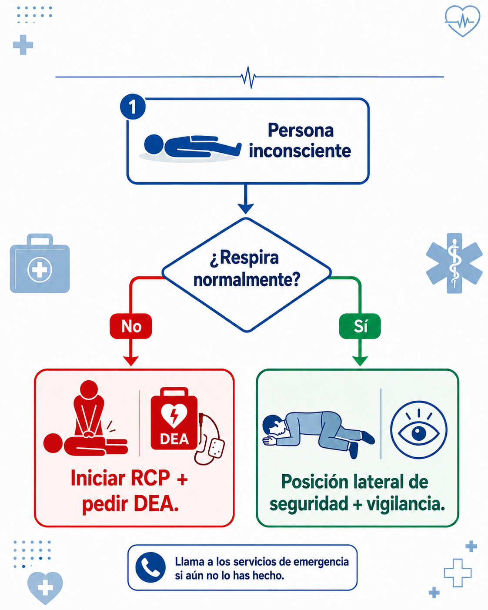

Posición lateral de seguridad y su relación con la RCP
La posición lateral de seguridad se relaciona con la RCP porque permite diferenciar una situación clave durante la valoración inicial del paciente:

Esta posición se utiliza cuando una persona está inconsciente, pero conserva respiración normal. Su objetivo es mantener la vía aérea abierta y disminuir el riesgo de broncoaspiración en caso de vómito, saliva o secreciones.
También puede utilizarse después de un retorno de circulación espontánea, cuando la persona vuelve a respirar normalmente, pero permanece inconsciente o somnolienta, siempre que no exista sospecha de trauma grave.
¿Cuándo usarla?
Se puede usar cuando:
- La persona está inconsciente.
- Respira normalmente.
- No requiere compresiones torácicas.
- No hay sospecha de trauma grave, caída importante o lesión de columna.
- Se necesita mantener la vía aérea despejada mientras llega ayuda.
¿Cuándo no usarla?
No debe usarse cuando:
- La persona no respira normalmente.
- Presenta jadeos o boqueadas.
- Se sospecha parada cardíaca.
- Se debe iniciar RCP.
- Hay sospecha de trauma de columna, salvo que sea indispensable para proteger la vida.
Verifica que la persona respira normalmente.
Coloca el brazo más cercano en ángulo recto.
Lleva el brazo más lejano sobre el pecho y apoya el dorso de la mano contra la mejilla.
Flexiona la pierna más alejada.
Gira cuidadosamente a la persona hacia un costado.
Ajusta la pierna flexionada para dar estabilidad.
Inclina ligeramente la cabeza hacia atrás para mantener la vía aérea abierta.
Vigila la respiración continuamente hasta la llegada del sistema de emergencias.
La posición lateral de seguridad ayuda al primer respondiente a tomar una decisión correcta:
La posición lateral de seguridad no reemplaza la RCP. Solo se usa si la persona respira normalmente.
No coloques en posición lateral a una persona que no respira normalmente o solo presenta jadeos. En ese caso, inicia RCP.
Si la persona en posición lateral deja de respirar normalmente, colócala boca arriba e inicia RCP de inmediato.